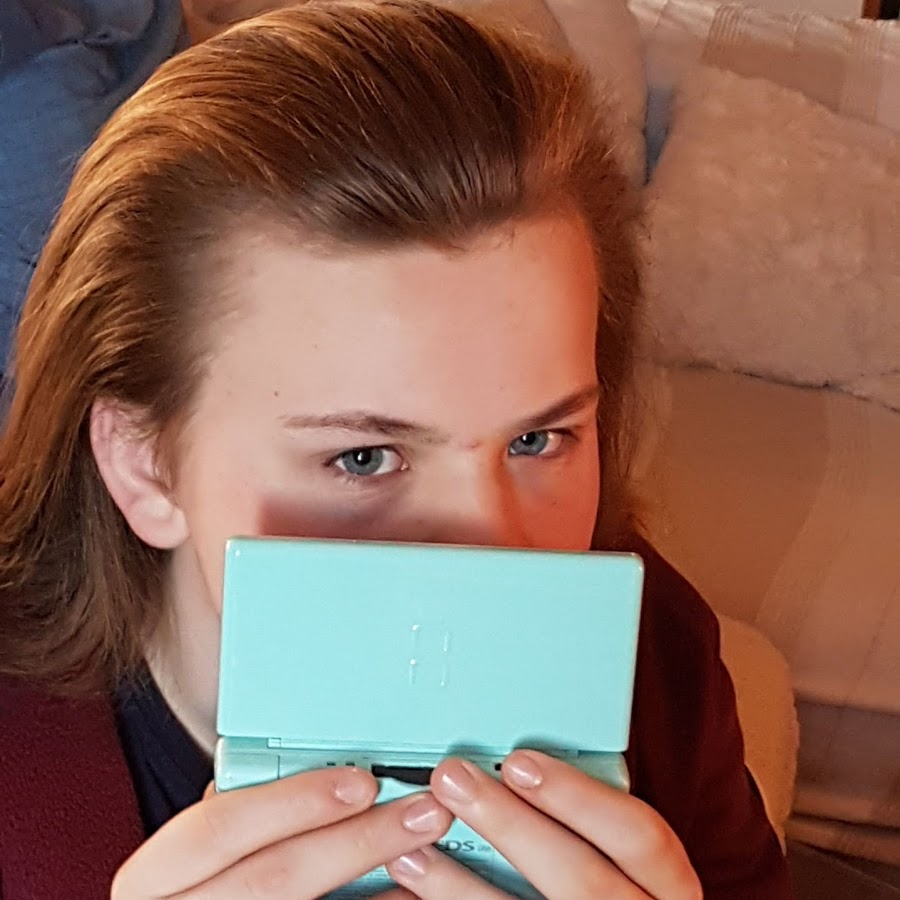
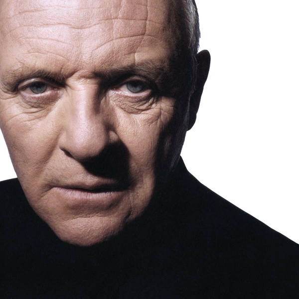
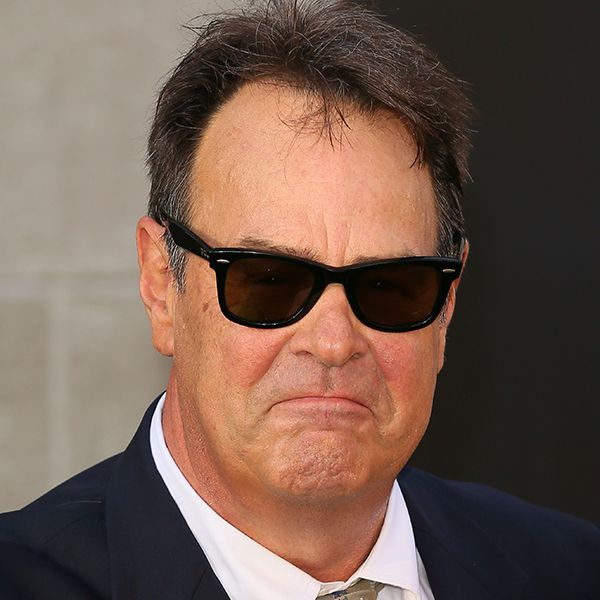
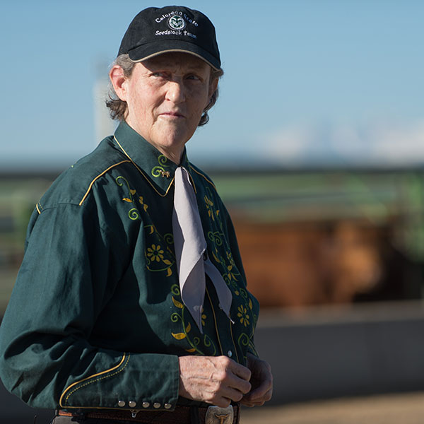
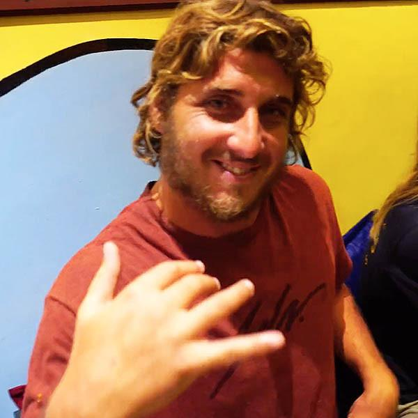

Personaggi Famosi
Personaggi famosi con la Sindrome di AspergerPersonaggi famosi
Di seguito una carrellata di personaggi famosi che grazie alle loro intuizioni o capacità sono riusciti a migliorare le nostre vite stravolgendo le regole.
“Ognuno è un genio. Ma se si giudica un pesce dalla sua abilità di arrampicarsi sugli alberi lui passerà tutta la sua vita a credersi stupido…”
Albert Einstein Fisico, Filosofo
Video
Approfondisci
Post recenti
Bobby Fisher
Molto probabilmente Asperger, esageratamente sincero, maniacale, paranoico e incapace di instaurare la benchè minima empatia verso il prossimo. Insofferente verso le sconfitte e le regole imposte.
Elon Musk
Secondo la rivista Forbes nel 2021 Elon Musk è la seconda persona più ricca del pianeta. Fondatore della Tesla e di SpaceX, di Pay Pal e di Hyperloop.
Durante una trasmissione satirica negli Stati Uniti confessa di essere Asperger, persona geniale che ha dimostrato di riuscire a vedere nel futuro più di chiunque altro.
Bill Gates
Secondo la rivista Forbes è la quarta persona più ricca al mondo, fondatore della Microsft e adesso presidente della fondazione privata di beneficenza Fondazione Bill Á Melinda Gates
Persona estremamente riservata, tono della voce monotono, la sua abitudine di evitare lo sguardo, il suo dondolio quando è concentrato, sono tutte caratteristiche delle persone nello spettro autistico.
Albert Einstein
Premio nobel per la fisica nel 1921, tra i più grandi fisici della storia, che cambiò radicalmente il mondo della scienza.
Una mente rivoluzionaria e innovativa, che lo rende un'icona che ha caratterizzato il Ventesimo secolo
Steve Jobs
Il piu importante visionario dei nostri tempi nel settore tecnologico, in grado di far convivere uno stile di vita irregolare ed ai limiti, con la massima aspirazione tecnologica dei suoi tempi.
Nel suo percorso di vita è stato in grado di reinventarsi piu volte, passando dall'allontanamento dalla sua azienda (Apple), alla creazione della Pixar, fino alla rivoluzione tecnologica simboleggiata dall'iPhone. Il suo totale assorbimento del lavoro, la sua straordinaria memoria ed il poco interesse verso le persone sono sicuramente tratti della Sindrome di Aspergr.

Furabintendo
Talento enorme nel panorama degli YouTuber italiani, un quoziente intellettivo fuori dalla norma e la grande capacità interpretativa lo rende uno dei personaggi più particolari del panorama artistico italiano
Susanna Tamaro
Tra le più grandi scrittrici italiane dell'ultimo secolo, autrice del bestseller mondiale Va dove ti porta il cuore dove la Comencini ne trae un film omonimo.
Autrice tra gli altri anche di Anima Mundi. Da poco ha esternato di avere la Sindrome di Asperger.
Greta Thunberg
Studentessa e attivista contro il cambiamento climatico. Famosa per il suo "sciopero scolastico per il clima" dove ogni venerdì si reca al parlamento durante l'orario scolastico
Grazie a lei nasce il movimento FridaysForFuture dove riesce a portare migliaia di studenti in centinai di piazze di tutto il mondo a manifestare contro il cambiamento climatico
Greta parla della sua Sindrome di Asperger: "vedo il mondo in modo leggermente diverso, secondo un'altra prospettiva. Ho un interesse speciale."
Durante la Conferenza Mondiale sul Clima Cop24 tiene una conferenza dove tuonava contro i potenti della terra "non sei mai troppo piccolo per fare la differenza"
Andy Warhol
Figura predominante del movimento Pop-Art e tra i più influenti artisti del XX secolo. Artista capace di creare un movimento artistico da immagini di comunicazione di massa come fonte di ispirazione
Timido e insolente, talento smisurato, timido, le sue esternazioni lucide ma particolari descrivono un artista indimenticabile

Anthony Hopkins
Attore dal talento straordinario, indimenticabili le sue interpretazione nel Silenzio degli Innocenti, Casa Howard e Quel che resta del giorno
L'attore ha rivelato che la sua diagnosi della sindrome di Asperger l'ha saputa in tarda età ed ha spiegato i suoi anni di profonda insicurezza e il suo causare problemi erano dovuti dal suo essere Asperger.
Bram Cohen
Inventore del protocollo BitTorrent peer-to-peer per la condivisione dei file. Genio informatico ha fatto tremare le major hollywoodiane con il suo sistema
"Tendo ad essere ossessionato da problemi tecnici, e ho una capacità di attenzione molto elevata, che sono ovviamente buone caratteristiche per un programmatore, e sembrano essere anche tratti Asperger, ma non avendo una versione di me senza l´Asperger è difficile da dire."

Dan Aykroyd
Tra i più versatili personaggi della scena cinematografica statunitense
Da una intervista, la star canadese ha rivelato che gli è stata diagnosticata la Sindrome di Asperger: “L´ossessione per i fantasmi e le forze dell´ordine - mi porto sempre dietro un distintivo della polizia e da piccolo sono diventato ossessionato da Hans Holzer, il più grande cacciatore di fantasmi mai vissuto. Ecco quando è nata l´idea del mio film "Ghostbusters”
Susan Boyle
Cantante inglese di un talento straordinario, scoperta durante la trasmissione inglese Britain's Got Talent dove ha conquistato il secondo posto
Dichiara di avere la Sindrome di Aspergr, spesso criticata per i suoi comportamenti particolari ed eccentrici “È una condizione con cui devo vivere e lavorare, ma sono più rilassata. Le persone capiranno meglio chi sono e perché faccio le cose che faccio”
Alan Turing
Considerato uno dei padri dell'informatica e uno dei più grandi matematici del XX secolo. Creatore dei primi algoritmi e pose le basi per gli studi legati alla scienza informatica e all'intelligenza artificiale
Tra i diversi sintomi legati alla Sindrome di Asperger che manifestava, si notano i ripetuti rituali quotidiani e i problemi legati alla comunicazione non verbale. "Propongo di considerare questa domanda: Le macchine sono in grado di pensare?"

Syd Barrett
Fondatore dei Pink Floyd che abbandonò dopo pochi anni, il suo stile chitarristico innovativo influenzò molti artisti famosi, come David Bowie o Brian Eno
Stereotipie, mancanza di empatia, repulsione alla luce e andatura particolare sono sicuramente le sue sintomatologie legate all'Asperger, quanto la sua capacità cognitiva legata alla musica.
Daryl Hannah
Attrice americana, famose le sue interpretazioni in film memorabili come Blade Runner, Kill Bill fino ad arrivare a Wall Street.
In un intervista racconta la sua esperienza con la Sindrome di Asperger e come la sua famiglia reagì "Mia madre mi ha ritirata da scuola. Ha deciso di lasciarmi, sai, esistere nel mio mondo immaginario per un anno o giù di lì e poi lentamente mi ha reintegrato nuovamente dentro, nella… nel mondo normale , qualunque cosa significhi...."

Temple Grandin
Grande studiosa, è riuscita a rivoluzionare grazie alle sue invenzioni, le pratiche per il trattamento del bestiame negli allevamenti americani
Racconta Temple Grandin che il successo legato al suo lavoro da progettista deriva dal suo essere Asperger, l'attenzione per i dettagli, la memoria visuale è riuscita a capire che cosa provavano gli animali all'interno degli allevamenti.

Satoshi Tajiri
Informatico giapponese, creatore dei Pokemon e leggenda dei Pokemon. Fin da piccolo collezionava insetti e fortissimo l'interesse per la programmazione, da qeusto mix nasce l'idea geniale dei Pokemon
I vertici della Nintendo raccontano di Satoshi come una persona solitaria ed incredibilmente creativa, solitario ed eccentrico. Oltre ai Pokemon, anche la nascita di giochi come Mario & Yoshi sono grazie alla sua straordinaria inventiva
Wolfgang Amadeus Mozart
Tra i più geniali musicisti della storia, creatore tra le più grandi composizioni musicali di straordinario valore artistico. Ha scritto composizioni che variano tra la musica sinfonica sacra alla musica da camera e grandi opere sinfoniche
Un genio assoluto della musica, egocentrico, con movenze buffe e particolari, privi di buonsenso, caratterizzati da atteggiamenti inopportuni specialmente nei contesti sociali

Clay Marzo
Surfer professionista, acclamato per la sua creatività e innovazione come giovane surfista. Partecipa come volontario ad un organizzazione non profit di Malibu dove introduce i bambini autistici al surf.
Scopre di essere un Asperger nel 2007, il suo comportamento eccentrico era spesso frainteso da chi lo circondava. Parlano di lui come una persona profondamente onesta, comprendeva difficilmente le regole di una gara, le sue stereotipie sono legate allo strofinarsi le mani frequentemente.
Tim Burton
Regista cinematografico, famoso per le sue pellicole Beetlejuice - Spiritello porcello, Batman, Edward mani di forbice fino ad arrivare a Miss Peregrine La casa dei ragazzi speciali
Tim Burton spiega che l'essere Asperger ha contribuito a ispirare la sua creatività e che non è un difetto ma una grande virtù
David Byrne
Fondatore dei Talking Heads, David Byrne è una celebrità della musica rock, anche se ha spaziato su più generi musicali collaborando tra gli altri con Brian Eno.
"Fin da piccolo ero una persona estremamente timido e non riuscivo a cucire rapporti sociali con le persone che mi circondavano. La musica mi ha aiutato, solo quando salivo sul palco potevo essere me stesso. Adesso con il passare degli anni mi sento più a mio agio con il mondo che mi circonda"